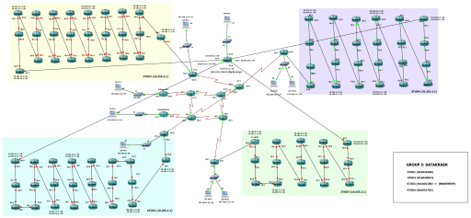
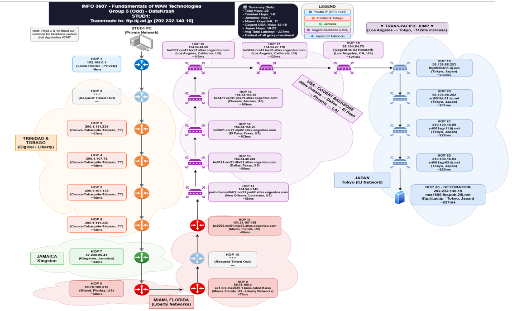

Overview
The project focused on implementing and validating a multi-router WAN environment using Frame Relay, eBGP, GRE VPN, NAT/PAT, Cisco ACLs, DHCP, NTP and DNS. My role was Project Lead & Network Engineer, with hands-on responsibility for configuration, testing, troubleshooting and documentation.
Problem / Challenge
The lab required multiple network technologies to operate together while maintaining connectivity and security. The implementation introduced real configuration constraints and failures that had to be isolated methodically rather than treated as a single fault.
- Frame Relay PVC / DLCI mapping issues
- Bandwidth constraints
- GRE tunnel connectivity failures
- IP addressing inconsistencies
- Interface limitations
- Routing and connectivity failures
- ACL behaviour requiring validation
My Role & Responsibilities
- Led the network engineering work and design implementation.
- Configured and tested routing, tunnelling, NAT/PAT and ACL controls.
- Investigated Frame Relay and DLCI/PVC behaviour.
- Used device outputs, routing information and connectivity checks to isolate failures.
- Validated the network after corrective changes and documented the implementation.
Approach / Process

Technologies & Skills
Challenges & Troubleshooting
Frame Relay PVC / DLCI mappings
When virtual-circuit connectivity failed, the investigation focused on the mapping relationship and the resulting interface behaviour rather than changing unrelated configuration.
GRE and routing failures
Connectivity checks, route information and tunnel state were used to determine whether the fault was at the interface, tunnel, addressing or routing layer.
ACL behaviour
Access-control behaviour was validated against the intended traffic flow, reinforcing the importance of understanding both policy intent and packet path.

WAN project evidence can be opened from the supporting PDF when the document is present in the deployed assets.
Open WAN evidence PDF →Results / Outcome
The completed lab provided a hands-on environment for secure branch connectivity, routing, tunnelling, address translation, access control and core network services, with implementation issues investigated through repeatable technical checks.
Key Findings
What I Learned
This project strengthened practical troubleshooting across multiple network layers and reinforced how routing, segmentation, access control and connectivity interact in an enterprise-style environment.
Key Takeaway
This project matters to my cybersecurity career because it demonstrates the infrastructure-level understanding required to investigate traffic, access-control behaviour, routing anomalies and connectivity issues in SOC and network-security environments.